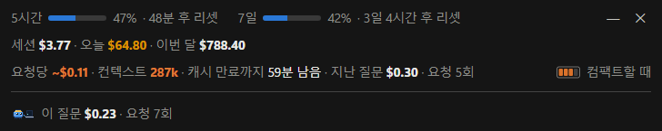
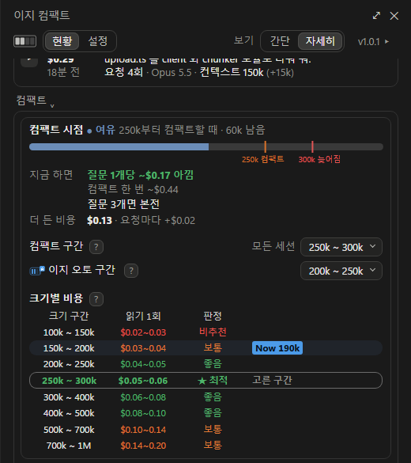
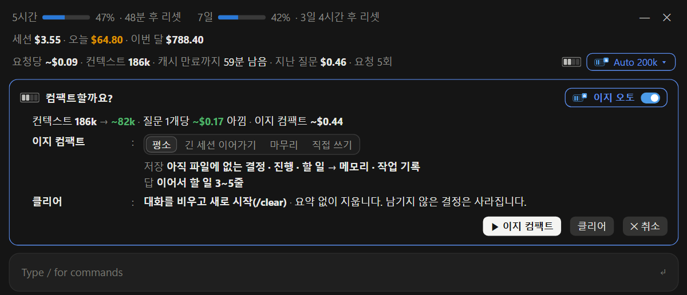
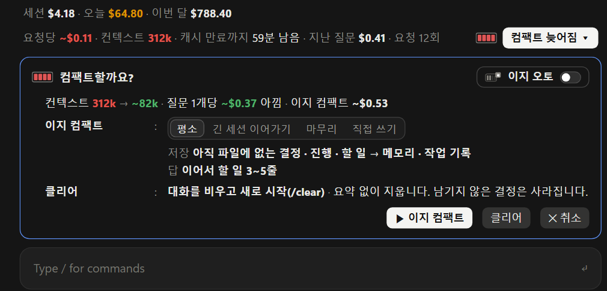
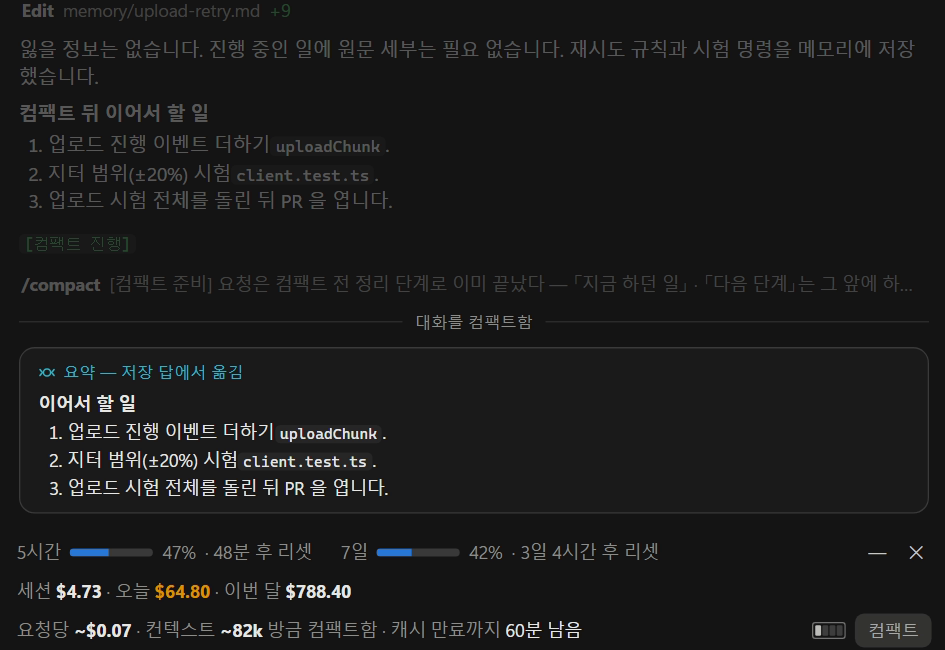
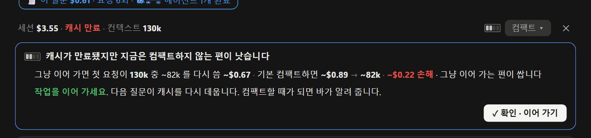
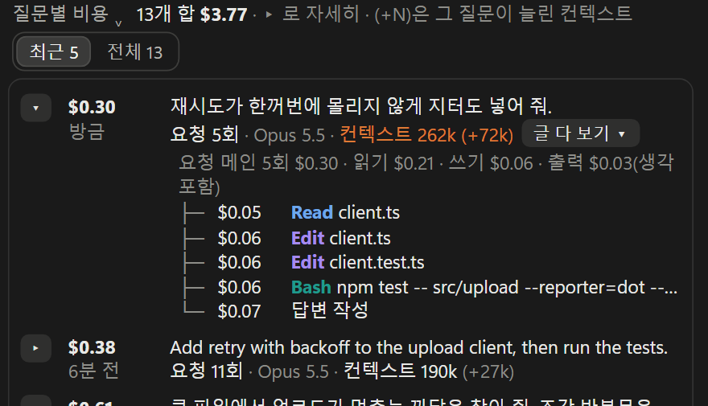
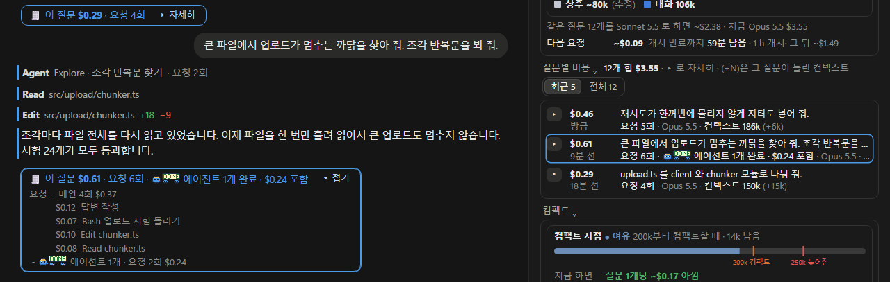

이지 컴팩트로 Claude Code 비용 줄이기
요금이 붙는 방식 · 비용을 늘리는 습관 · 줄이는 법을 움직이는 그림으로
같은 질문인데 왜 어떤 때는 몇 배 비쌀까?
- Claude 는 대화를 기억하지 못해서 요청마다 컨텍스트 전체를 다시 보냅니다. 컨텍스트가 클수록 요청 한 번 값이 오릅니다(실측 20만 아래 약 $0.11, 70만 넘으면 약 $0.21)[M10].
- 다시 보낸 컨텍스트가 서버의 캐시와 맞으면 20분의 1 값으로 읽힙니다. 오래 쉬거나 모델을 바꾸면 캐시를 못 써서 컨텍스트 전체를 비싼 값으로 다시 맡깁니다[1].
- 비용을 늘리는 습관은 한 세션 계속 쓰기, 컴팩트 미루기, 잃을까 봐 못 넘기기, 캐시 식히기, 생각 깊이 늘 최대, 막연하게 크게 시키기입니다(4장).
- 알맞을 때 컴팩트하고 일이 바뀌면 새 세션을 엽니다. 이 셈으로는 20만~25만 토큰 근처에서 컴팩트할 때 가장 쌌습니다. 이지 컴팩트는 컴팩트할 때와 캐시가 식는 때를 바에 알려 줍니다(5장).
1같은 질문의 값 비교
같은 질문도 언제 묻느냐에 따라 값이 크게 다릅니다. 쉬었다 돌아와서 물으면 13배까지 듭니다.
값을 가르는 것은 셋입니다. 컨텍스트 양, 서버의 캐시가 남았는지, 질문 하나가 보내는 요청 수입니다[4][M10].
예로 든 질문은 그림 1 · 2 와 같습니다(파일을 찾아 읽고 시험을 돌린 뒤 답함, 요청 4번). 값은 Opus 5.5 요율로 셌습니다.
구독 플랜(Pro, Max 등)으로 쓰면 이 금액은 청구액이 아니라 한도가 깎이는 눈금입니다(2.3)[4].
2요금이 붙는 방식
값은 토큰 수로 매기고 요청마다 컨텍스트 전체가 실립니다.
2.1 토큰 · 컨텍스트 · 캐시
토큰은 값을 세는 단위, 컨텍스트는 요청마다 보내는 글, 캐시는 서버가 저장해 둔 앞 요청의 컨텍스트입니다. 요청은 Claude Code 가 컨텍스트를 서버에 한 번 보내고 답을 한 번 받는 일이고 질문 하나에 요청이 여러 번 갑니다. 그래서 질문 하나의 값은 그 질문 동안 간 요청들의 값을 더한 것입니다(2.2).
컨텍스트는 Claude 가 요청마다 읽는 글 전체이고 토큰이라는 조각으로 되어 있습니다. 막대의 칸을 누르면 그 안의 글을 크게 봅니다. 값도 이 조각 수로 매깁니다.
조각 나눔은 보기입니다. 실제로는 모델이 나누고 조각 수는 실측 비율을 따랐습니다(한국어 문서는 글자 1개쯤, 코드는 1.5글자쯤이 토큰 1개)[M12]. 앞 네 칸의 크기는 새 세션의 /context 실측입니다[M13].
질문이 쌓이면 대화 부분만 자랍니다. 아래는 새 세션을 열자마자 /context 로 본 구성의 한 예입니다(설치한 도구와 메모리에 따라 다름)[M13]. 질문할 때마다 이 전체를 다시 보냅니다(2.2).
지금 컨텍스트 3.7만 토큰. 질문마다 컨텍스트가 약 3만 토큰씩 자란다고 본 그림입니다.
캐시는 서버가 방금 받은 컨텍스트를 잠시 저장해 둔 것입니다. 다음 요청의 앞부분이 캐시와 같으면 캐시를 그대로 씁니다(적중). 오래 쉬면 캐시가 지워집니다. 컨텍스트가 30만 토큰일 때:
가정 · 근거 보기
글자와 토큰의 비율은 Read 로 읽은 큰 파일이 컨텍스트를 얼마나 늘렸는지로 쟀습니다(한국어 md 103개 · 코드 175개)[M12]. 미뤄 둔 도구 설명(약 8.5만)은 필요할 때만 실려서 빠져 있습니다. 데스크톱 앱 세션은 더 크게 시작합니다(첫 요청 가운데 6.8만)[M13]. 가장 싼 자리는 그림 8 의 셈이고 자동 컴팩트 자리는 공식 문서입니다[5]. 요율은 Opus 5.5(백만 토큰당 새로 읽기 $4, 맡기기 1시간 $8, 꺼내 읽기 $0.20)[3].2.2 질문 하나의 처리 과정
Claude 는 지난 대화를 기억하지 못합니다. 그래서 Claude Code 는 서버에 보낼 때마다 지금까지의 대화를 통째로 다시 싣습니다[1][2]. 요청은 서버에 한 번 보내고 답을 한 번 받는 일이고 값은 요청마다 매깁니다. 질문은 내가 친 글 하나이고 질문 하나에 요청이 여러 번 갑니다.
요청마다 컨텍스트 전체를 싣고 가므로 질문 하나의 값은 그 질문의 요청 값을 모두 더한 것입니다. 글쓴이의 기록에서 질문 하나는 평균 12~32번 요청을 보냈습니다[M10]. 뒤의 그림 3 · 6 · 8 은 질문 하나를 요청 10번으로 셉니다.
가정 · 근거 보기
질문 · 명령 · 출력은 보기입니다. Grep · Read · Bash 는 Claude Code 의 도구 이름입니다. 서버는 한 번에 도구 여러 개를 돌려 달라고 하기도 합니다[11]. 실제로는 질문 하나에 요청이 10번 넘게 가기도 합니다[M10]. 컨텍스트 양은 새 세션의 지시문 · 도구 설명 3.7만[M13]에 질문 1,500 · 검색 결과 500 · 파일 1.4만 · 시험 결과 1.2만 토큰을 차례로 붙인 셈입니다.요청이 갈 때마다 컨텍스트 전체를 다시 실으니 값도 요청마다 붙습니다.
가정 · 근거 보기
새 세션도 지시문과 도구 설명으로 수만 토큰에서 시작합니다[M13]. 새 세션의 첫 요청도 앞부분의 72%는 이미 캐시에 있었습니다[M13]. 지시문처럼 늘 같은 앞부분은 다른 세션이 맡긴 캐시를 같이 쓰기 때문입니다[1]. 그래서 질문 1 은 지시문의 나머지를 처음 맡기느라 다음 질문보다 조금 비쌉니다. 그림은 질문 하나를 그림 1 과 같은 요청 4번으로 줄였습니다. 실제로는 질문 하나에 요청이 10번 넘게 가기도 합니다[M10]. 요청 값은 Opus 5.5 로 앞서 보낸 부분은 꺼내 읽기($0.20/백만 토큰), 새로 붙은 부분은 맡기기($8), 쓰기는 답 쓰기($20)로 셌습니다. 생각한 글도 답 쓰기 값에 들어갑니다[3][4].2.3 모델별 요금
API 요금은 토큰 수로 계산합니다. 같은 토큰도 하는 일(새로 읽기 · 맡기기 · 꺼내 읽기 · 답 쓰기)마다 단가가 다르고 모델마다 또 다릅니다[3]. 답 쓰기 값에는 Claude 가 답하기 전에 속으로 생각한 글도 들어갑니다[4][5].
3캐시와 컨텍스트 양
캐시는 서버가 앞 요청의 컨텍스트를 잠시 저장해 둔 것입니다. 다음 요청의 앞부분이 이 캐시와 같으면 새로 읽지 않고 캐시를 그대로 쓰는데 이것을 적중(캐시 히트)이라고 하며 값은 20분의 1입니다. 보관 시간(보통 1시간)이 지나 캐시가 지워지는 것을 「캐시가 식는다」고 합니다. 식으면 컨텍스트 전체를 다시 맡기고 컨텍스트가 클수록 매번 읽는 양이 늘어 값이 오릅니다.
3.1 캐시 적중
서버는 방금 받은 컨텍스트를 캐시로 저장해 둡니다. 다음 요청이 오면 앞에서부터 캐시와 맞춰 보고 같은 부분은 새로 읽지 않고 그대로 씁니다(적중). 그 값은 새로 읽기의 20분의 1입니다[3][7].
Claude Code 의 /usage 에는 세션 적중률이 「Prompt cache (main)」 줄로 나옵니다[1]. 글쓴이의 10월 세션은 토큰으로 99.0% 가 적중이었습니다[M2].
가정 · 근거 보기
캐시가 없었다면 컨텍스트 전체를 새로 읽습니다($4/백만 토큰). 적중한 부분은 꺼내 읽기($0.20), 새 부분은 1시간 맡기기($8)로 셌습니다[3]. 컨텍스트를 다섯 부분으로 나눈 것은 보기입니다. 적중률은 토큰으로 셌습니다./usage 의 적중률을 어떻게 세는지는 문서에 자세히 없습니다[1].3.2 캐시 만료와 모델 변경
맡긴 캐시는 보관 시간(보통 1시간)이 지나면 지워지고 모델을 바꾸면 쓸 수 없습니다. 그러면 다음 요청이 컨텍스트 전체를 처음부터 다시 맡깁니다[1][4].
보관 시간은 쓰는 방식과 설정에 따라 5분이기도 합니다. 내 보관 시간과 적중률은 /usage 의 Prompt cache 줄에서 봅니다[1].
가정 · 근거 보기
얼마나 오래 쉬었는지가 아니라 보관 시간을 넘겼느냐만 값을 바꿉니다. 82분 쉰 뒤와 64시간 쉰 뒤 다시 맡긴 값이 거의 같았습니다[M3]. 캐시는 모델마다 따로입니다. 생각 깊이는 Opus 5.5 · Sonnet 5.5 · Haiku 5.5 · Fable 5.1 을 API 키나 Claude 구독으로 쓸 때 캐시를 그대로 씁니다. 그 밖의 모델이나 Amazon Bedrock · Google Cloud 에서는 바꾸면 처음부터 다시 맡깁니다[1]. 「무엇이 쌀까」는 이어 가기 = 컨텍스트 전체 다시 맡기기, 컴팩트 = 캐시 없이 컨텍스트 읽기($4) + 요약 쓰기 1.5만 + 줄어든 컨텍스트 10만 맡기기, 새 세션 = 지시문 · 도구 3.7만 맡기기로 셌습니다[1][M13]. 보관 시간 기본값은 Claude 계정으로 요금제 안에서 쓰는 메인 컨텍스트가 1시간입니다. API 키, 클라우드 제공자, 사용 크레딧, 하위 에이전트는 5분이고 설정(promptCacheTtl)이나 회사 관리 설정으로 1시간으로 바꿀 수 있습니다[1].목록은 공식 문서의 요지입니다[1]. 모델과 생각 깊이는 세션 처음에 정하고 컴팩트는 일이 끊기는 곳에서 하면 캐시가 덜 깨집니다.
3.3 긴 세션
세션을 끌고 가며 질문 하나의 값이 어떻게 변하는지, 컴팩트하면 얼마나 줄어드는지 봅니다.
컴팩트는 지금까지의 대화를 요약 하나로 줄이는 일입니다. 직접 /compact 로 하거나 컨텍스트가 약 96.7만 토큰에 닿으면 Claude Code 가 스스로 합니다(자동 컴팩트)[5].
가정 · 근거 보기
새 세션 5만에서 시작해 질문마다 컨텍스트가 3만 토큰 자랍니다. 질문 1개는 요청 10번, 요청마다 새 글 3,000 토큰을 맡깁니다[M4]. 생각 깊이별 요청당 출력은 실측(최대 2,434, 엑스트라 1,458, 중간 385 토큰)[M8]이고 *낮음과 높음은 그 사이를 이은 가정입니다. 컴팩트 1번은 컨텍스트 읽기 + 요약 쓰기 1.5만 + 다시 맡기기 4.3만 토큰이고 뒤 크기는 10만입니다[M5]. Haiku 5.5 는 요청이 10만 토큰을 넘으면 5배 요율입니다[3].3.4 실제 세션 사례
글쓴이의 실제 세션 하나(2026-10-20 ~ 23, Opus 5.5, 요청 1,821번)를 다시 셈했습니다. 25만에서 컴팩트만 했어도 합계가 약 3분의 1 줄었습니다(추정)[M11].
가정 · 근거 보기
세션 기록에서 Opus 5.5 메인 요청만 셌습니다(에이전트 몫 뺌). 요청 5번씩 묶어 그렸습니다. 이상적인 쪽은 같은 요청 · 같은 새 글 · 같은 출력을 두고 컨텍스트 양만 줄여 셌습니다. 컴팩트 1번은 컨텍스트 읽기 + 요약 쓰기 1.5만 + 다시 맡기기 4.3만 토큰[M5]이고 식은 캐시 때는 줄어든 컨텍스트만 다시 맡깁니다. 컴팩트 뒤 파일을 다시 읽는 값은 넣지 않아 실제로 덜 내는 값은 이보다 작을 수 있습니다. 실제 쪽엔 세션 기록에 없는 컴팩트 요약 요청이 빠져 있습니다. 값은 API 요율로 셌습니다(구독이라 청구액은 아님).여러 세션(질문 1,980개)을 모아 봐도 요청 한 번 값은 20만 아래 약 $0.11, 70만 넘으면 약 $0.21 이었습니다[M10]. 그래서 평균 질문당 값이 높을 때는 요청 한 번 값을 먼저 봅니다. 그것도 높으면 컨텍스트가 커서이고(컴팩트할 때), 아니면 질문 하나가 일을 많이 시켜서입니다.
4비용을 늘리는 습관
같은 일을 맡겨도 쓰는 습관에 따라 비용이 몇 배까지 차이 납니다. 세션을 길게 끌면 요청마다 다시 읽는 양이 늘고 오래 쉬면 캐시가 지워져 컨텍스트 전체를 다시 맡겨야 합니다. 실제 기록에서 비용을 키운 습관은 아래와 같습니다. 이지 컴팩트가 습관마다 돕는 것은 5.3 에 있습니다.
일이 바뀌어도 한 세션을 계속 쓴다
일이 바뀌어도 앞 일의 컨텍스트가 그대로 실려 있어 한 줄 질문도 쌓인 컨텍스트 전체를 읽는 값을 냅니다[4]. 글쓴이의 기록(질문 1,980개)에서 요청 한 번 값은 컨텍스트가 20만 아래일 때 약 $0.11, 70만을 넘었을 때 약 $0.21 로 두 배 가까이 됐습니다[M10].
일이 바뀌면 먼저 「지금까지 정한 것과 다음 할 일을 진행메모.md 에 적어 줘」라고 시킵니다. 새 일은 새 세션을 열어 시작하고 앞 일로 돌아올 때는 「진행메모.md 부터 읽고 이어 가」라고 합니다(5.2). /clear 는 컨텍스트를 모두 비우므로 메모를 남긴 뒤에만 씁니다[9].
컴팩트를 자동 컴팩트까지 미룬다
자동 컴팩트는 컨텍스트가 약 96.7만 토큰에 닿으면 Claude Code 가 스스로 하는 컴팩트입니다[5]. 그때까지 미루면 질문마다 큰 컨텍스트를 읽는 값이 쌓입니다. 글쓴이가 개발 열흘 동안 실제로 컴팩트한 때의 컨텍스트 양은 가운데 값이 65만이었습니다[M4]. 그림 8 의 셈으로는 65만에서 할 때 질문 60개 총액이 가장 싼 자리(약 23만)의 약 1.3배입니다.
기능 하나를 끝냈을 때처럼 일이 끊기는 곳에서 직접 /compact 를 입력합니다[1]. 컨텍스트가 20만~25만쯤이면 비용으로도 가장 싼 때입니다(그림 8).
잃을까 봐 컴팩트도 새 세션도 미룬다
정한 것과 다음 할 일이 대화 속에만 있으면 컴팩트나 새 세션 뒤에 사라질까 봐 한 세션을 계속 끌게 됩니다. 그러면 습관 1 · 2 처럼 커진 컨텍스트를 질문마다 다시 읽어 값이 오릅니다. 걱정 자체는 틀리지 않습니다. 글쓴이도 적어 두지 않은 결정을 찾느라 닫은 세션 4개의 대화 기록을 다시 뒤졌습니다[M9].
컴팩트하거나 새 세션을 열기 전에 「지금까지 정한 것과 그 까닭, 다음 할 일을 진행메모.md 에 적어 줘」라고 시킵니다. 파일에 적은 것은 컴팩트 뒤에도 새 세션에서도 그대로 남습니다. 컴팩트할 때는 /compact 뒤에 남길 것을 적으면(예: /compact 정한 것과 다음 할 일 위주로) 요약이 그것을 챙깁니다[9]. 순서는 5.2 에 있습니다.
캐시를 식힌다(오래 쉬기 · 도중에 모델 바꾸기)
캐시는 정해진 시간 동안 쓰지 않으면 지워집니다(Claude 계정 요금제면 1시간)[1]. 지워진 뒤 첫 요청은 컨텍스트 전체를 처음부터 다시 맡깁니다. 글쓴이의 기록에서 15시간 쉬고 돌아온 첫 요청 하나가 $7.08 이었습니다. 캐시가 남아 있었다면 약 $0.21 이었을 요청입니다[M11]. 도중에 모델을 바꿔도 캐시를 쓰지 못해 처음부터 다시 맡깁니다[1].
점심이나 퇴근처럼 오래 비우기 전에 /compact 로 컨텍스트를 줄여 둡니다. 돌아와서 다시 맡기는 양이 작아집니다. 일을 마칠 거면 진행 메모를 쓰고 닫습니다. 모델은 세션을 시작할 때 고르고 도중에 바꾸지 않습니다[1].
생각 깊이를 늘 최대로 둔다
막연하게 크게 시킨다
막연하게 시키면 Claude 가 이것저것 찾아 읽느라 질문 하나에 요청을 여러 번 보냅니다[4]. 요청마다 컨텍스트 전체를 다시 읽으므로 요청 수만큼 값이 붙습니다(그림 1). 글쓴이의 기록에서 컨텍스트가 10만 아래인 작은 세션에서도 질문 하나가 평균 약 32번 요청을 보냈고 질문 하나의 값은 가운데 $0.96 이었습니다. 질문 값을 가장 크게 흔든 것은 컨텍스트 양보다 요청 수였습니다[M10].
고칠 파일 · 함수와 원하는 결과를 적어 시킵니다(예: 「upload/chunker.ts 의 재시도 간격을 2초로 바꿔 줘」). 저장소 전체를 훑는 조사처럼 큰 읽기는 하위 에이전트에게 맡기면 그 읽기가 이 세션의 컨텍스트에 쌓이지 않습니다[4].
5비용 줄이는 법
컨텍스트가 커지면 적당한 때 컴팩트하거나 새 세션으로 인계해야 비용이 줄어듭니다. 이 셈으로는 컨텍스트가 20만~25만일 때 줄이는 것이 가장 쌌습니다. 이지 컴팩트는 그때를 바에 알려 줍니다.
5.1 컴팩트는 언제 하나
컴팩트하면 컨텍스트가 요약 하나로 줄어 그 뒤 질문마다 읽는 양이 작아집니다[1]. 너무 이르면 요약하는 값이 자주 들고 너무 늦으면 큰 컨텍스트를 읽는 값이 쌓입니다. 막대를 끌어 가장 싼 자리를 찾아보세요.
가정 · 근거 보기
그림 6 과 같은 가정(Opus 5.5 · 엑스트라)입니다. 질문마다 요청 수를 고정해서 여기선 평균 질문당 값이 컴팩트 시점만 따라 움직입니다. 실제로는 요청 수가 더 크게 흔듭니다(3.4).5.2 컴팩트와 세션 인계
컨텍스트가 커졌을 때 고를 수 있는 길은 그대로 이어 가기 · 컴팩트 · 세션 인계입니다. 컴팩트는 같은 세션에서 지금까지의 대화를 요약 하나로 줄입니다. 세션 인계는 진행 메모를 남긴 뒤 새 세션을 열어 그 메모부터 읽게 하는 것입니다. 셋은 남는 것과 드는 값이 다릅니다.
가정 · 근거 보기
컴팩트 뒤에는 CLAUDE.md, 자동 메모리, 계획이 디스크에서 다시 붙고 최근에 고친 파일도 다섯 개까지 다시 읽힙니다(긴 파일은 이름만)[9]. 어떤 세부가 빠질지는 요약마다 달라서 ◐ · 줄 그음은 개념 그림입니다. 값은 질문 10개 더(질문마다 3만 자람, Opus 5.5 · 엑스트라)로 셌습니다. 컴팩트는 컨텍스트 읽기 + 요약 쓰기 1.5만 + 다시 맡기기 4.3만, 뒤 크기 10만입니다[M5]. 세션 인계는 진행 메모 쓰기(컨텍스트 읽기 + 출력 4천 토큰) 뒤 약 3.7만에서 시작하고 첫 요청에서 앞부분 72% 를 꺼내 읽는다고 봤습니다[M13].진행 메모를 남기라는 근거
컴팩트 요약에는 정한 것과 그 까닭이 빠질 수 있습니다. 그래서 진행 메모를 따로 남기라고 권하는데 그 근거는 아래와 같습니다.
컴팩트하기 전에 남기는 진행 메모 예시
# 진행 메모 (업로드 고치기) 목표: 큰 파일 업로드가 멈추지 않게 한다 정한 것: 파일을 조각으로 나눠 보낸다. 까닭은 한 번에 읽으면 메모리가 모자라서 한 것: 조각 나누기 끝, 시험 24개 통과 다음 할 일: 1. 진행률 표시 2. 재시도 간격 시험 관련 파일: src/upload/chunker.ts, client.test.ts 열린 물음: 재시도는 몇 번까지?
- 쓰게 하기
「지금까지 정한 것과 다음 할 일을 진행메모.md 에 적어 줘」 - 훑어보기
빠진 결정이 없는지 한 번 봅니다. - 컴팩트 또는 인계
/compact 진행메모 기준, 다음 할 일 위주로처럼 초점을 주거나[9] 새 세션에서 「진행메모.md 부터 읽고 이어 가」. - 자리 잡기
오래 갈 일이면 CLAUDE.md 에 「진행메모.md 를 먼저 읽을 것」 한 줄. CLAUDE.md 는 새 세션과 컴팩트 때 저절로 읽힙니다[9].
메모는 짧게 둡니다. 긴 파일은 컴팩트 뒤에 내용 대신 이름만 다시 붙습니다[9]. 쉬기 전에 써 두면 쌉니다. 캐시가 식은 뒤에 쓰면 그 메모 요청이 컨텍스트 전체를 다시 맡깁니다(3.2).
5.3 이지 컴팩트
이지 컴팩트는 Claude Code 플러그인입니다. 입력창 위 바에 요청당 값 · 컨텍스트 양 · 캐시 만료까지 남은 시간을 띄우고 컴팩트할 때를 알려 줍니다. 이지 컴팩트를 쓰는 데 드는 비용은 거의 없습니다. 바와 패널은 Claude Code mod 와 스크립트가 내 PC 에 있는 세션 기록을 읽어 그리므로 보는 데 토큰을 쓰지 않습니다. 토큰이 드는 것은 진행 메모 저장 · 컴팩트처럼 Claude 에 일을 시킬 때뿐입니다. 무료(MIT 라이선스)입니다[8].
습관 1 · 일이 바뀌어도 한 세션을 계속 쓴다입력창 바로 위 바에 요청당 값과 컨텍스트 양이 늘 보여 일이 바뀐 뒤에도 값이 오르는 것을 바로 알 수 있습니다.

습관 2 · 컴팩트를 자동 컴팩트까지 미룬다사용자가 이지 컴팩트 설정에서 정한 컴팩트 구간에 컨텍스트가 들어서면 바의 컨텍스트 숫자와 컴팩트 버튼이 주황 「컴팩트할 때」로, 구간을 넘으면 빨강 「컴팩트 늦어짐」으로 바뀝니다. 컴팩트 구간은 설치했을 때 25만~30만이고 크기별 값 표(화면 2)를 보고 고칠 수 있습니다. 이지 오토를 켜 두면 컨텍스트가 따로 정해 둔 오토 구간을 넘을 때 알아서 진행 메모를 적고 컴팩트하며 긴 일 도중이었으면 하던 일을 이어 갑니다.


습관 3 · 잃을까 봐 컴팩트도 새 세션도 미룬다[이지 컴팩트]를 누르면 Claude 가 먼저 컴팩트로 잃을 만한 것을 살펴 아직 파일에 없는 결정 · 진행 · 다음 할 일을 메모리나 진행 메모(md)에 적습니다. 그다음 컴팩트가 대화를 요약합니다. 파일에 적은 것은 컴팩트 뒤에도 그대로 남고 요약에는 이어서 할 일이 남습니다.


습관 4 · 캐시를 식힌다(오래 쉬기 · 도중에 모델 바꾸기)바에 캐시 만료까지 남은 시간이 보입니다. 만료된 뒤에는 그냥 이어 가기와 컴팩트 가운데 어느 쪽이 싼지 값으로 알려 줍니다.

습관 5 · 생각 깊이를 늘 최대로 둔다깊이를 정하는 것은 쓰는 사람의 몫입니다. 이지 컴팩트는 끝난 질문을 펼치면 출력 값(생각 포함)을 보여 주고 도중에 깊이가 바뀐 질문은 깊이별로 나눠 보여 줍니다. 깊이를 올렸을 때 값이 얼마나 느는지 보고 정할 수 있습니다.

습관 6 · 막연하게 크게 시킨다답마다 끝에 그 질문의 값과 요청 수가 붙고 펼치면 동작마다 값이 보입니다. 요청이 많았던 질문을 보고 다음에 더 구체적으로 시킬 수 있습니다.

3.4 세션의 이지 컴팩트 알림 자리
이지 컴팩트는 입력창 위 바의 색과 글로 컴팩트할 때를 알립니다. 컨텍스트가 컴팩트 구간에 들어서면 주황 「컴팩트할 때」, 구간을 넘으면 빨강 「컴팩트 늦어짐」입니다. 컴팩트 구간은 사용자가 이지 컴팩트 설정에서 정하는 값이고 설치했을 때는 25만~30만입니다[8]. 아래는 3.4 의 세션 기록 위에 그 표시가 바뀌었을 자리를 찍은 것입니다.
가정 · 근거 보기
점은 실제 컨텍스트 양이 컴팩트 구간에 들어설 때(주황)와 넘을 때(빨강), 그리고 캐시가 식은 뒤 첫 질문(파랑)입니다. 컴팩트하면 다시 주황부터 셉니다. 예상은 그림 7 의 「25만에서 컴팩트했다면」과 같은 셈입니다. 표시를 그냥 넘긴 횟수와 컴팩트 뒤 파일을 다시 읽는 값은 넣지 않았습니다. 처음 설치 구간이 그림 8 의 가장 싼 자리(약 23만)보다 조금 늦은 까닭은 실제 세션 128개를 다시 셈하면 23만~33만이 가장 싼 값의 2% 안이었고 덜 자주 하는 편이 일의 흐름에 낫기 때문입니다[8].설치하기 전에 알아 둘 것
이런 습관이 있다면 이지 컴팩트를 써 보세요
이지 컴팩트가 대신 해 주는 것
- 컴팩트를 자동 컴팩트까지 미룬다→사용자가 정한 컴팩트 구간에 컨텍스트가 들어서면 바가 주황 「컴팩트할 때」로, 넘으면 빨강 「컴팩트 늦어짐」으로 알립니다. 이지 오토를 켜 두면 알아서 컴팩트합니다
- 잃을까 봐 컴팩트도 새 세션도 미룬다→[이지 컴팩트]를 누르면 아직 파일에 없는 결정 · 진행 · 다음 할 일을 메모리나 진행 메모(md)로 남긴 뒤 컴팩트가 대화를 요약합니다. 파일로 남긴 것은 컴팩트 뒤에도 그대로 있습니다
- 캐시를 식힌다→바에 캐시 만료까지 남은 시간이 보이고 만료된 뒤에는 컴팩트와 그냥 이어 가기 가운데 어느 쪽이 싼지 알려 줍니다
이지 컴팩트가 값을 보여 주는 것
- 일이 바뀌어도 한 세션을 계속 쓴다→바에 요청당 값과 컨텍스트 양이 늘 보여 값이 오르는 것을 바로 압니다
- 생각 깊이를 늘 최대로 둔다→끝난 질문의 출력 값(생각 포함)을 보여 주고 도중에 깊이가 바뀐 질문은 깊이별로 나눠 보여 줍니다
- 막연하게 크게 시킨다→답마다 그 질문의 값과 요청 수가 붙어 요청이 많았던 질문을 바로 압니다
설치 Claude 데스크톱 앱의 Code 탭이나 터미널의 claude 에 아래 한 줄을 보낸 뒤 앱을 완전히 껐다 켭니다. Claude Code 2.1.295 이상과 git 이 필요합니다(없으면 Claude 가 안내합니다).
이 플러그인 설치해줘: github.com/JaeSeongHa5280/easy-compact (claude plugin marketplace add JaeSeongHa5280/easy-compact 후 claude plugin install easy-compact@easy-compact)
6계산의 한계
- 금액은 API 정가로 환산한 값입니다. 구독 플랜이면 청구액이 아니라 한도를 얼마나 쓰는지의 눈금입니다[4].
- 실측은 글쓴이 한 사람의 기록이라 일의 종류에 따라 다릅니다. 생각 깊이별 출력도 일이 달라 순수한 효과가 아닙니다[M8].
- 그림 3, 6, 8, 9 의 셈은 단순화한 가정입니다(질문 1개 = 요청 10번 등). 내 실제 값은 이지 컴팩트나 /usage 로 봅니다.
- 그림 7 · 10 의 「25만 · 알림 자리에서 컴팩트했다면」은 추정입니다. 컨텍스트 양만 줄여 셌습니다. 컴팩트 뒤 파일을 다시 읽는 값은 넣지 않았습니다.
- 글자 · 토큰 비율과 새 세션 구성은 글쓴이의 값입니다. 설치한 도구, 메모리, 글의 종류에 따라 다릅니다[M12][M13].
- 한도가 토큰 몇 개인지, 5시간을 언제부터 세는지는 공개돼 있지 않습니다[6].
- 터미널의 claude 는 1시간 캐시로 쉬는 긴 세션을 식기 직전에 스스로 컴팩트하기도 합니다(데스크톱 앱은 문서에 없음)[1].
- 요율과 보관 시간은 바뀔 수 있습니다. 2026-10-23 기준입니다.
참고 문헌
- [1]Claude Code, 「How Claude Code uses prompt caching」. code.claude.com/docs/en/prompt-caching
요청마다 전체를 다시 보냄 · 캐시의 세 층(지시문 · 프로젝트 · 대화) · 보관 시간 기본값(Claude 계정 요금제 안 메인 컨텍스트 1시간, API 키 · 클라우드 · 사용 크레딧 · 하위 에이전트 5분)과 1시간으로 바꾸는 설정 ·/usage의 Prompt cache (main) 줄(적중률 · 놓친 횟수 · 지금 따뜻한지) · 캐시를 깨는 일(모델 · 빠른 모드 · MCP · 컴팩트 등)과 깨지 않는 일(생각 깊이 — Opus 5.5 · Sonnet 5.5 · Haiku 5.5 · Fable 5.1 을 API 키 · 구독으로) · 식은 뒤 컴팩트는 캐시 없이 읽음 · 같은 폴더의 세션끼리 앞부분 공유 · 터미널의 쉬는 세션 자동 컴팩트. - [2]Claude API, 「Using the Messages API」. platform.claude.com/docs/en/build-with-claude/working-with-messages
API 는 상태가 없어 대화 기록 전체를 보냅니다. - [3]Claude API, 「Pricing」. platform.claude.com/docs/en/about-claude/pricing
모델별 요율 · 캐시 배수(Opus 5.5 · Sonnet 5.5 의 캐시 읽기는 새로 읽기의 0.05배) · 100만 토큰 창도 같은 요율. - [4]Claude Code, 「Manage costs effectively」. code.claude.com/docs/en/costs
비용은 컨텍스트 크기를 따라 커짐 · 생각 토큰은 출력으로 청구 · 긴 세션은 한 줄 질문에도 컨텍스트 전체만큼 씀 · 쉰 뒤 첫 메시지는 캐시를 놓침 · /clear 는 값이 없음 · 구독자에게 보이는 금액은 청구액이 아님. - [5]Claude Code, 「Model configuration」. code.claude.com/docs/en/model-config
기본 모델 Opus 5.5 · 100만 토큰 창 · 자동 컴팩트 약 96.7만 · 생각 깊이 단계 · 생각 토큰은 모두 청구. - [6]Claude 도움말, 「How do usage and length limits work」. support.claude.com/en/articles/11647753
5시간 · 주간 한도 · claude.ai · Claude Code · 데스크톱이 함께 씀 · 컨텍스트 양 · 기능 · 모델 · 생각 깊이에 따라 깎임 · 사용 크레딧. - [7]Claude API, 「Prompt caching」. platform.claude.com/docs/en/build-with-claude/prompt-caching
캐시 원리 · 1시간 보관. - [8]easy-compact. github.com/JaeSeongHa5280/easy-compact
공개 README · 변경 기록(1.0.5) · 소개용 데모(화면 그림의 원본) · MIT 라이선스. - [9]Claude Code, 「Explore the context window」. code.claude.com/docs/en/context-window
컴팩트 뒤 남는 것: CLAUDE.md · 자동 메모리 · 계획은 디스크에서 다시, 최근 고친 파일 다섯까지 다시 읽음(긴 파일은 경로만) · /compact 에 초점 주기 · /clear. - [10]Anthropic Engineering, 「Effective harnesses for long-running agents」(2025-11-26). anthropic.com/engineering/effective-harnesses-for-long-running-agents
여러 세션에 걸친 긴 일은 컴팩트만으로 이어지지 않았음 · 진행 파일 · git 기록 · 기능 목록을 남기고 새 세션이 그것부터 읽게 함 · 결과는 숫자 없는 질적 보고. - [11]Claude API, 「Tool use with Claude」. platform.claude.com/docs/en/agents-and-tools/tool-use/overview
Claude 가 도구 요청(tool_use)을 돌려주면 앱이 도구를 돌리고 결과(tool_result)를 다음 요청에 붙여 보냄 · Bash 같은 도구는 앱 쪽에서 돎 · 한 응답에 도구 여럿 · 도구 요청과 결과도 토큰으로 값을 냄. - [M1]새 세션 첫 요청 크기 — 2026-09 실측. 데스크톱 앱 4.2만 ~ 6.0만(가운데 5.3만) · 터미널 3.7만 토큰.
- [M2]캐시 적중률 — 2026-10 실측, 글쓴이의 세션 기록(Opus 5.5 메인, 토큰 기준) 99.0%(요청 150번 넘는 세션 36개 가운데 99.1%, 낮은 쪽 10% 97.7%). 2026-08 세션 21개 · 1,510번에선 95.9%.
- [M3]캐시 만료 사례 — 2026-09 실측. 23번 주고받은 세션에서 6시간 쉬고 돌아온 질문 하나 = 그 세션 비용의 17% · 세션 44개에서 1시간 넘게 쉬고 돌아온 첫 요청 21번 = 전체 비용의 약 12% · 82분과 64시간 쉰 뒤 다시 맡긴 값이 거의 같음(둘 다 약 40만 토큰).
- [M4]이지 컴팩트 개발 열흘 — 2026-10-10 ~ 19 실측. 요청 16,909번(에이전트 포함), API 값 $2,374: 캐시 읽기 62% · 답 쓰기 20% · 1시간 맡기기 17% · 5분 맡기기 1%, 요청 평균 44.8만 토큰, 40만 넘는 요청 52% 가 비용 67%, 컴팩트한 때 24.3만 ~ 95.2만(가운데 약 65만). 요청당 새로 맡기는 양 약 3,000 토큰은 이 구성에서 거꾸로 셈.
- [M5]컴팩트 뒤 크기와 다시 맡기는 양 — 개발 중 실측 9.7만 ~ 12.5만 토큰. 2026-10-23 글쓴이의 세션 기록의 컴팩트 114번: 뒤 크기 가운데 9.8만, 컴팩트 직후 첫 요청이 다시 맡긴 양 가운데 4.3만(가운데 절반 2.8만 ~ 4.9만).
- [M6]5시간 한도와 API 값 — 2026-10-06 · 07, 글쓴이(Max 20)의 한도 두 번 소진 기록. 5시간 한도 1번 ≈ API 값 $95 ~ 120(추정).
- [M7]이지 컴팩트 금액 대조 — 2026-10-16, 글쓴이의 앱 설정의 이번 달 금액과 1달러 안쪽.
- [M8]생각 깊이별 요청당 출력 — 글쓴이의 질문 기록(Opus 5.5). 최대 302질문 · 2,434 토큰 / 엑스트라 190질문 · 1,458 / 중간 6질문 · 385. 일이 달라 순수한 효과는 아님(추정).
- [M9]대화에만 남은 결정 — 2026-10-21 사례. 보관된 세션 4개의 대화 기록에서, 문서에 안 적힌 결정 · 조사 결과를 다시 찾아 옮김.
- [M10]질문당 값과 컨텍스트 양 — 2026-10-23 실측. 글쓴이의 세션 기록 139개 · Opus 5.5 메인 요청(에이전트 몫 뺌) · 질문 1,980개. 요청 한 번 값 약 $0.11(20만 아래) → $0.21(70만 넘음) · 10만 아래에서 질문 하나의 요청 수 평균 31.7 · 질문 값 가운데 $0.96, 질문 10개 이상 세션 41개에서 평균 질문당 값과의 순위 상관 — 요청 수/질문 0.91 · 컨텍스트 양 0.69.
- [M11]실제 세션 하나 — 2026-10-20 ~ 23 실측. 글쓴이의 Claude Code 세션 기록, Opus 5.5 메인 요청 1,821번 · 약 52시간, API 값 $242.28: 오래 쉰 뒤 컨텍스트를 다시 맡긴 요청 4번(1시간 47분 ~ 15시간 4분 쉼)이 캐시가 있었을 때보다 $15.43 더 냄 · 40만 넘는 요청 46% 가 비용 59% · 컴팩트 7번(44.7만 ~ 83.3만, 가운데 52.4만). 「권장대로였다면」은 같은 요청 · 새 글 · 출력에 컨텍스트 양만 25만에서 컴팩트해 10만으로 줄였다고 본 추정($163.85, 컴팩트 22번).
- [M12]글자와 토큰 — 2026-10-23 실측. 글쓴이의 기록에서 Read 로 읽은 큰 파일(8천 자 이상)이 다음 요청의 컨텍스트를 늘린 양: 한국어 md 103개(한글 비율 가운데 37%) 글자/토큰 가운데 1.09(가운데 절반 1.04 ~ 1.11) · 코드 175개 1.54(1.49 ~ 1.61), 한 줄 약 32토큰.
- [M13]새 세션의 컨텍스트 — 2026-10-23 실측. 글쓴이의 터미널 새 세션의
/context: 3.66만 토큰(지시문 2,800 · 도구 설명 19,600 · MCP 1,344 · 메모리 파일 5,600 · 스킬 7,200 · 대화 10, 미뤄 둔 도구 설명 약 8.5만은 안 실림). 글쓴이의 세션 154개의 첫 요청은 모두 앞부분을 캐시에서 꺼내 읽었음(꺼내 읽은 몫 가운데 72%, 첫 요청 크기 가운데 6.8만).
2026-10-23 기준 · Claude Code(데스크톱 앱 Code 탭 · 터미널) · 이지 컴팩트 1.0.5